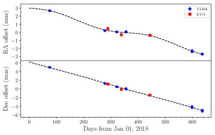
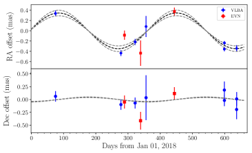
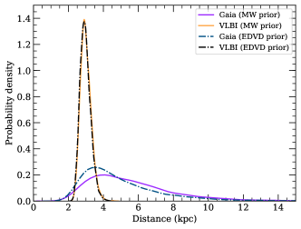

اختلاف منظر راديوي للثنائي الأشعة السينية ذي الثقب الأسود MAXI J1820+070
الملخص
باستخدام مصفوفة خط الأساس الطويل جدا والشبكة الأوروبية للتداخل ذي خط الأساس الطويل جدا، أجرينا قياسا دقيقا لاختلاف المنظر الراديوي للثنائي الأشعة السينية ذي الثقب الأسود MAXI J1820+070، وهو ما يوفّر مسافة إلى المصدر مستقلة عن النموذج. يترجم قياسنا لاختلاف المنظر البالغ () mas لـ MAXI J1820+070 إلى مسافة قدرها () kpc. وتدل هذه المسافة على أن المصدر بلغ () في المائة من لمعان إدنغتون عند ذروة فورته. وعلاوة على ذلك، نستخدم هذه المسافة لتنقيح التقديرات السابقة لزاوية ميل النفاثة وسرعتها وكتلة الثقب الأسود في MAXI J1820+070 لتصبح ()∘، و() ، و() ، على الترتيب.
keywords:
دقة زاوية عالية – القياسات الفلكية الموضعية – اختلافات المنظر – المتصل الراديوي: العوارض العابرة – الأشعة السينية: الثنائيات – النجوم: ثقوب سوداء1 مقدمة
تُعد المسافات إلى الأنظمة الفلكية كميات أساسية تتيح لنا الربط بين المعلمات المرصودة والفيزيائية (مثل التدفق واللمعان، والسرعات الزاوية والفيزيائية). وعلى وجه الخصوص، يمكن عندئذ في ثنائيات الأشعة السينية للثقوب السوداء (BHXBs) دراسة العلاقة بين أطوار التراكم المختلفة وكسور لمعان إدنغتون (Maccarone, 2003)، كما يمكن وضع الأنظمة بدقة على مستوى لمعان الأشعة السينية/الراديو (Gallo et al., 2018) لسبر اقتران النفاثة بالتراكم. ومع توافر مسافات دقيقة، يمكننا كسر الانحلال بين زوايا ميل النفاثات الراديوية وسرعاتها (Fender, 2003). كما يمكن لزاوية ميل مقيدة جيدا أن تساعد في الحصول على تقديرات دقيقة لكتلة الثقب الأسود (BH) من دالة كتلة النظام (Cantrell et al., 2010). وتساعد المسافة الدقيقة في الحصول على سرعة فضائية ثلاثية الأبعاد مقيدة جيدا، ومن ثم على توزيع سرعة الركلة المحتملة (PKV) للنظام (Atri et al., 2019)، مما يقدم دلائل على آلية تكوّن الثقب الأسود (Nelemans et al., 1999).
غالبا ما تُقدّر المسافات إلى ثنائيات الأشعة السينية للثقوب السوداء بدراسة الأطياف الضوئية/تحت الحمراء للنجم المانح (Jonker and Nelemans, 2004). ويمكن أيضا استخدام الحركة الذاتية للنفاثتين المبتعدة والمقتربة لوضع حد أعلى لمسافة ثنائيات الأشعة السينية للثقوب السوداء (Mirabel and Rodríguez, 1994). ويمكن تقدير حدود دنيا للمسافة بقياس إما الانطفاء بين النجمي (Zdziarski et al., 1998, 2004) أو سرعات امتصاص H i (مثلا Chauhan et al., 2019) باتجاه المصدر. كما استُخدمت هالة تشتت غبار الأشعة السينية لتقييد المسافة إلى بعض ثنائيات الأشعة السينية للثقوب السوداء (مثلا Xiang et al., 2011). غير أن هذه الطرائق كلها معتمدة على النموذج، وتنطوي على افتراضات معينة. والطريقة الوحيدة المستقلة عن النموذج لتحديد المسافة هي قياس اختلاف منظر مثلثي عالي الدلالة. إلا أنه، بالنظر إلى مسافاتها النموذجية (عدة kpc)، لا يمكن إجراء مثل هذه الأرصاد عالية الدقة إلا باستخدام التداخل ذي خط الأساس الطويل جدا (VLBI) أو بواسطة أقمار صناعية مثل Gaia (Gaia Collaboration et al., 2018; Gandhi et al., 2019). وقد تكون قدرات Gaia على إجراء قياسات فلكية موضعية عالية الدقة لثنائيات الأشعة السينية للثقوب السوداء في المستوى المجري محدودة بسبب الانطفاء الشديد وانخفاض السطوع البصري خارج الفورة. كما أن لدى Gaia إزاحة عالمية في نقطة الصفر في قياسات اختلاف المنظر، ولا يزال مقدارها موضع نقاش (Chan and Bovy, 2019). لذلك تظل حملات القياسات الفلكية الموضعية المستهدفة بتقنية VLBI على ثنائيات الأشعة السينية للثقوب السوداء في حالة الفورة حاسمة الأهمية. ومن بين 60 مرشحا من مرشحي BHXB (Tetarenko et al., 2016)، لا تملك إلا V404 Cyg (Miller-Jones et al., 2009)، وCyg X–1 (Reid et al., 2011; Gaia Collaboration et al., 2018)، وGRS 1915+105 (Reid et al., 2014) قياسا مباشرا لاختلاف المنظر بدلالة >5.
في مارس 2018 (MJD 58188)، دخل ثنائي الأشعة السينية للثقب الأسود MAXI J1820+070 (ASASSN-18ey، ويُشار إليه فيما بعد بـ MAXI J1820) في فورة ورُصد كعابر لامع في الأشعة السينية (Kawamuro et al., 2018) وفي الضوء المرئي (Tucker et al., 2018). وتُظهر الصفائح الفوتوغرافية الأرشيفية فورتين سابقتين في 1898 و1934 (Grindlay et al., 2012)، مما يشير إلى مقياس زمني لتكرار الفورات قدره 40 سنة لهذا المصدر (Kojiguchi et al., 2019). وفي فورته في مارس 2018، أنجز العابر دورة فورة كاملة من الحالة الصلبة (حتى MJD 58303.5) إلى اللينة (MJD 58310.7–58380.0) ثم إلى الحالة الصلبة (بدءا من MJD 58393.0) (Shidatsu et al., 2019). وكشفت الأرصاد الراديوية أثناء الانتقال من الحالة الصلبة إلى اللينة وبعده عن نفاثة مقتربة تبدو فوق ضوئية ظاهريا (Bright وآخرون، مقدّم للنشر). وتلاشى المصدر تقريبا إلى السكون في فبراير 2018 (Russell et al., 2019)، مما أتاح دراسات طيفية بصرية (Torres et al., 2019) لتأكيد وجود ثقب أسود ديناميكيا. ثم أظهر لاحقا عودتي سطوع بدأتا في MJD 58552 وMJD 58691، واستمرت كل منهما شهرين تقريبا (Ulowetz et al., 2019; Zampieri et al., 2019).
إن توزيع PKV لـ MAXI J1820 مقيد على نحو فضفاض، إذ استند إلى قياس الحركة الذاتية من Gaia، mas yr-1 و mas yr-1، وإلى حدود واسعة للمسافة (1.73.9 kpc; Atri et al., 2019). وتعتمد المسافة المستنتجة من اختلاف منظر Gaia اعتمادا كبيرا على القبليات المستخدمة لعكس اختلاف المنظر (2.1–7.2 kpc; Gandhi et al., 2019). لذلك، ومن أجل الحصول على اختلاف منظر أكثر دقة لـ MAXI J1820، نفذنا حملة VLBI مستهدفة بينما كان المصدر في الحالة الطيفية الصلبة للأشعة السينية، مطلقا نفاثات راديوية مدمجة مستقرة.
2 الأرصاد واختزال البيانات
| Project Code | MJD | Array | Frequency | Phase Calibrator | Check source | RA (J2000) | Dec (J2000) | Peak Intensity |
|---|---|---|---|---|---|---|---|---|
| (GHz) | (18h20m) | (07∘11′ ) | (mJy bm-1) | |||||
| BM467A | 58193.65 | VLBA | 15 | J1813 | J1821 | 219386536(1) | 07170025(4) | 31.60.2 |
| BM467O | 58397.01 | VLBA | 15 | J1813 | J1821 | 219384875(4) | 07166302(10) | 5.840.08 |
| EA062A | 58407.71 | EVN | 5 | J1821 | J1813 | 219384883(33) | 07166075(27) | 1.550.05 |
| BM467R | 58441.73 | VLBA | 15 | J1813 | J1821 | 219384770(9) | 07165549(31) | 0.560.03 |
| EA062B | 58457.04 | EVN | 5 | J1821 | J1813 | 21938437(16) | 0716485(12) | 0.160.03 |
| BM467S | 58474.86 | VLBA | 5 | J1821, J1813 | J1813, J1821 | 21938462(14) | 0716498(41) | 0.130.02 |
| EA062C | 58562.25 | EVN | 5 | J1821 | J1813 | 219384324(12) | 07163533(10) | 3.860.05 |
| BA130B | 58718.06 | VLBA | 5 | J1821, J1813 | J1813, J1821 | 219382958(8) | 07160872(21) | 4.090.05 |
| 58718.14 | VLBA | 15 | J1821, J1813 | J1813, J1821 | 219383011(3) | 07160709(14) | 4.320.12 | |
| BA130C | 58755.04 | VLBA | 5 | J1821, J1813 | J1813, J1821 | 219382761(28) | 07159845(93) | 1.000.05 |
| 58755.12 | VLBA | 15 | J1821, J1813 | J1813, J1821 | 219382730(22) | 07160090(74) | 1.200.12 |
راقبنا MAXI J1820 (انظر الجدول 1) باستخدام مصفوفة خط الأساس الطويل جدا (VLBA)، مستعملين كلا من برنامج مسبار تسارع النفاثات وحصرها في ثنائيات الأشعة السينية العابرة (JACPOT-XRB) (مثلا، Miller-Jones et al., 2012, 2019, رمز المقترح BM467)، وبرنامج قياسات فلكية موضعية طويل الأمد (مثلا، Atri et al., 2019, رمز المقترح BA130)، مع حملة مستهدفة مكملة من الشبكة الأوروبية لـ VLBI (EVN) (رمز المقترح EA062). استخدمت جميع الأرصاد مزيجا من J1821+0549 (J1821 فيما يلي) وJ1813+065 (J1813 فيما يلي) بوصفهما مرجع الطور ومصدري التحقق القياسي الفلكي. أُخذت مواضع المعايرات من فهرس الأساس الراديوي (rfc2015a11 1 http://astrogeo.org/vlbi/solutions/rfc_2015a/rfc_2015a_cat.html). وكانت مواضعنا المفترضة (J2000) هي RA = 18h21m27305837، وDec = 05∘49′1065156 لـ J1821، و RA = 18h13m33411619، وDec = 06∘15′4203366 لـ MAXI J1813. صوّرنا البيانات المعايرة وحددنا موضع الهدف بملاءمة مصدر نقطي في مستوى الصورة لكل حقبة.
2.1 حملات VLBA
في الحالة الصلبة عند بداية الفورة ونهايتها، تكون النفاثات الراديوية مدمجة ومثالية للقياسات الفلكية الموضعية. أخذنا أربع حقب (مارس، وأكتوبر، ونوفمبر، وديسمبر 2018) من الأرصاد عبر برنامج JACPOT-XRB، رُصدت فيها الحقب الثلاث الأولى (رموز المقترحات BM467A وBM467O وBM467R) عند 15 GHz. استخدمت هذه الأرصاد J1813 (على بُعد 1.93∘ من MAXI J1820) كمعاير للطور (لأنه أسطع عند 15 GHz)، وجرى التناوب كل دقيقة بينه وبين الهدف، مع رصد مصدر التحقق J1821 (على بُعد 1.39∘ من MAXI J1820) مرة كل ثماني دورات. رصدنا كُتلا جيوديسية (Reid et al., 2009) لمدة نصف ساعة في بداية كل رصد ونهايته لنمذجة التروبوسفير على نحو أفضل. ورُبطت البيانات باستخدام DiFX (Deller et al., 2011)، ثم اتُّبعت خطوات المعايرة القياسية باستخدام نظام معالجة الصور الفلكية (AIPS 31DEC17; Greisen, 2003). ومع خفوت المصدر في ديسمبر 2018، أخذنا الحقبة الأخيرة في حزمة 5 GHz الأكثر حساسية، وفق مخطط الرصد J1821–J1813–MAXI J1820.
رصدنا أيضا ضمن برنامج القياسات الفلكية الموضعية BA130 أثناء عودة السطوع في أغسطس 2019. تناوبنا عبر هذه المصادر كلها عند 5 GHz لمدة 1.5 ساعة، ثم عند 15 GHz لمدة 2.5 ساعة، مع كتل جيوديسية في بداية الرصد ونهايته. واتبعنا تقنيات المعايرة القياسية ضمن AIPS (31DEC17). أُحيل MAXI J1820 طوريا على نحو منفصل إلى J1821 وإلى J1813. وقد أزيلت بيانات طبق Mauna kea طوال مدة BA130B كاملة بسبب تأخيرات تشتتية عالية جدا حُسبت بواسطة المهمة TECOR.
2.2 حملة اختلاف المنظر: بيانات EVN
كما حصلنا على الموافقة للرصد باستخدام EVN عند 5 GHz خلال القمم المتوقعة لإزاحة اختلاف المنظر في RA في شهري مارس وسبتمبر، وفي الميل في شهري يونيو وديسمبر. رُصد المصدر في أكتوبر 2018، وديسمبر 2018، ومارس 2019، لكنه خفت إلى ما دون قدرة EVN على الكشف قبل حقبة يونيو 2019 المجدولة. اختير J1821 كمصدر مرجعي للطور لقربه من MAXI J1820، ورُصد كل 4 دقائق، مع استخدام J1813 مصدرا للتحقق. اختُزلت البيانات باستخدام AIPS (31DEC17). استخدمنا تصحيحات مرشح الحزمة، والسعة القبلية، وزاوية اختلاف المنظر المنتجة بواسطة خط أنابيب EVN، وصححنا التأخيرات التشتتية الأيونوسفيرية. ثم أجرينا معايرة الطور والتأخير والمعدل باستخدام الإجراءات القياسية في AIPS، واستنتجنا حلول الطور والتأخير المشتقة من J1821 إلى كل من J1813 وMAXI J1820.
2.3 التخفيف من الانحيازات المنهجية في القياسات الفلكية الموضعية
للتخفيف من الأخطاء المنهجية الناشئة عن الارتفاعات المنخفضة، أزلنا كل البيانات الواقعة دون 20∘ في الارتفاع. كما أزلنا نصف ساعة من البيانات حول أوقات الشروق/الغروب في كل محطة، حين يمكن أن يكون الأيونوسفير سريع التغير. ولمنع بنية المصدر، كما تُعاين بتغطية uv مختلفة، من التأثير في قياساتنا الفلكية الموضعية، أنشأنا نماذج عالمية لمصدري مرجع الطور عبر تكديس جميع بيانات EVN عند 5 GHz، وجميع بيانات VLBA عند كل من 5 و15 GHz. واستُخدمت هذه النماذج العالمية لاشتقاق حلول الطور والتأخير النهائية لكل حقبة، ثم استُنبطت إلى MAXI J1820 ومصدر التحقق ذي الصلة.
رصد برنامج JACPOT-XRB (انظر § 2.1) وحملة اختلاف المنظر EVN (انظر § 2.2) مصادر خارج مجرية مختلفة كمعايرات للطور. لذلك قمنا بجدولة أرصاد برنامج القياسات الفلكية الموضعية للثنائي الأشعة السينية ذي الثقب الأسود (BA130B وBA130C، انظر § 2.1) بحيث يمكن إحالة MAXI J1820 طوريا على نحو مستقل إلى كل من J1813 وJ1821. وبجمع هذين الرصدين مع BM467S (الذي تناوب أيضا بين المصادر الثلاثة كلها)، قسنا إزاحة متوسطة مقدارها +0.290.08 mas في RA و+0.050.02 mas في Dec في موضع MAXI J1820 عندما أُحيل طوريا إلى J1813 مقارنة بإحالته طوريا إلى J1821. ولأخذ إزاحة الإطار القياسي الفلكي هذه في الحسبان، أزحنا مواضع الهدف المقيسة عندما أُحيلت طوريا إلى J1813 بمقدار 0.290.08 mas و0.050.02 mas في RA وDec، على الترتيب.
ولتقدير المنهجيات الناشئة عن التروبوسفير ()، استخدمنا محاكيات Pradel et al. (2006) لكل من قياسات VLBA وEVN، بما يلائم الفصل الزاوي بين الهدف ومعاير الطور وميل الهدف. وإلى ذلك أضفنا تربيعيا تقديرا محافظا للمنهجيات الأيونوسفيرية (Reid et al., 2017)، مأخوذا على أنه ، حيث إن هو تردد الرصد و هو الفصل الزاوي بين الهدف ومعاير مرجع الطور. كان الجذر المتوسط التربيعي لموضع مصدر التحقق لدينا (J1821 للحالات BM467A وBM467O وBM467R، وJ1813 لمجموعات البيانات الباقية) في جميع الحالات أقل من الحدود العليا المحافظة المحسوبة من الأثر المشترك لـ و.
3 النتائج والتحليل
3.1 نهج بايزي لملاءمة اختلاف المنظر
لاشتقاق الحركة الذاتية (، )، واختلاف المنظر ()، والموضع المرجعي (RA0، Dec0) لـ MAXIJ1820، لاءمنا الموضع بوصفه دالة في الزمن (مثلا Loinard et al., 2007)، مع تاريخ مرجعي مكافئ لنقطة منتصف حملة الرصد (MJD 58474). ولإجراء الملاءمة، اعتمدنا نهجا بايزيا، مستخدمين حزمة PYMC3 في بايثون (Salvatier et al., 2016) لتنفيذ تقنية مونت كارلو بسلسلة ماركوف هاملتونية (MCMC, Neal, 2012) مع خوارزمية أخذ عينات No-U-Turn (NUTS; Hoffman and Gelman, 2011). واستُخدمت قياسات الحركة الذاتية واختلاف المنظر من Gaia–DR2 كقبليات في الإجراء. كانت لدينا أرصاد عند 5 و15 GHz، ولذلك لاءمنا أي إزاحة محتملة في لب انبعاث قمة المعاير من 5 GHz إلى 15 GHz (،)، واستخدمنا قبلية منتظمة من -1 mas إلى 1 mas لكل من و. تحققنا من التقارب في MCMC باستخدام تشخيص Gelman-Rubin (Gelman and Rubin, 1992). التوزيعات اللاحقة لجميع المعلمات غاوسية، وتُعطى الوسيطات ومجال الثقة 68 في المائة لكل من المعلمات الملاءمة في الجدول 2. وكل أشرطة الخطأ المبلّغ عنها فيما يلي هي عند ثقة 68 في المائة، ما لم يُذكر خلاف ذلك. وتظهر الملاءمات الناتجة لحركة السماء في الشكل 1.
| Parameter | Value |
|---|---|
| RA0 | 18h20m219384568 0.0000024 |
| Dec0 | 0711071649624 0.0000680 |
| (mas yr-1) | 3.051 0.046 |
| (mas yr-1) | 6.394 0.075 |
| (mas) | 0.348 0.033 |
| (mas) | 0.04 0.04 |
| (mas) | 0.04 0.08 |
3.2 المسافة من اختلاف المنظر



تعاني المسافات المستنتجة بعكس قياسات اختلاف منظر منخفضة الدلالة من انحياز Lutz-Kelker، ومن ثم يمكن التقليل من تقديرها (Lutz and Kelker, 1973). ولذلك فإن استخدام قبليات ملائمة ضروري للحصول على مسافات ذات معنى (Bailer-Jones, 2015; Astraatmadja and Bailer-Jones, 2016). نستخدم قبلية تمثل توزيع كثافة ثنائيات الأشعة السينية في درب التبانة (قبلية MW فيما يلي؛ Atri et al. (2019)) لتقدير التوزيع اللاحق للمسافة إلى MAXI J1820. وباستخدام قياس اختلاف المنظر الجديد والأدق لدينا (0.3480.033 mas) وقبلية MW، حددنا التوزيع اللاحق للمسافة (الشكل 2)، فوجدنا وسيطا قدره 2.96 kpc ومجال ثقة 68 في المائة مقداره 0.33 kpc. وقارنا هذا التوزيع اللاحق للمسافة بذلك الذي حُصل عليه باستخدام قياس اختلاف المنظر الذي أجرته Gaia-DR2، والذي أعطى قيمة وسيطة أكبر وتوزيعا أوسع () kpc. وتبلغ قيم المنوال ومجال الكثافة الأعلى عند 68 في المائة (Bailer-Jones, 2015) لهذا التوزيع 4.13 kpc. اختبرنا أيضا قبلية الكثافة الحجمية المتناقصة أسيا (EDVD) (Bailer-Jones, 2015) باستخدام معامل طول القياس L الخاص بـ BHXBs من Gandhi et al. (2019)، ووجدنا أنه، بخلاف التوزيع اللاحق للمسافة من Gaia–DR2 (وسيط kpc؛ منوال 3.46 kpc)، لا يتأثر قياس المسافة الجديد لدينا بالقبلية المختارة (انظر الشكل 2). ويوضح هذا أن الدلالة العالية لقياس اختلاف المنظر لدينا أدت إلى مسافة إلى المصدر مستقلة عن النموذج.
4 مناقشة
مع قياس المسافة المحسّن كثيرا لـ MAXI J1820، ننظر الآن في التبعات الفيزيائية لنتيجتنا.
4.1 لمعانات الانتقال وذروة الفورة
رُصدت الفورة الرئيسة لـ MAXI J1820 وكان لها تدفق أشعة سينية أعظمي قدره ( erg cm-2 s-1 في حزمة 1–100 keV (Shidatsu et al., 2019). وتدل مسافة kpc على أن النظام لم يبلغ إلا عند ذروة فورته، حيث هو لمعان إدنغتون لثقب أسود كتلته (انظر القسم 4.3). ويعني لمعان الانتقال من الحالة اللينة إلى الصلبة، انطلاقا من تدفق قدره ( erg cm -2 s-1، أن النظام أجرى هذا الانتقال عند في المائة، بما يتفق مع كسر اللمعان المتوسط البالغ 1.580.93 في المائة لثنائيات الأشعة السينية للثقوب السوداء (Vahdat Motlagh et al., 2019; Maccarone, 2003). ومن ثم، فإن لمعان الانتقال بين الحالات يوفر في MAXI J1820 مؤشرا جيدا للمسافة.
4.2 معلمات النفاثة
بافتراض التناظر الذاتي، يمكن استخدام الحركات الذاتية المقيسة لقذائف نفاثة مقتربة ومبتعدة متناظرة مع مسافة ما لتحديد سرعة النفاثة وزاوية ميلها بين النفاثة وخط البصر على نحو وحيد (Mirabel and Rodríguez, 1994; Fender et al., 1999)، وذلك عبر حيث إن هي سرعة النفاثة (مطَبَّعة إلى سرعة الضوء )، و و هما الحركتان الذاتيتان للمكوّنين المقترب والمبتعد من النفاثة، و هي زاوية ميل النفاثة إلى خط البصر، و هي المسافة إلى النظام. قاس Bright et al. (2020) الحركات الذاتية لقذائف نفاثة متناظرة خلال طور الانتقال في MAXI J1820 mas d-1، و mas d-1. نستخدم ذلك مع قيد المسافة لدينا لتقدير = و.
4.3 تبعات ذلك على كتلة الثقب الأسود
أجرى Torres et al. (2019) تحليلا طيفيا بصريا لـ MAXI J1820 وأبلغ عن دالة كتلة مقدارها ، حيث إن هي دالة الكتلة، و هي زاوية الميل، و و هما كتلتا الثقب الأسود ورفيقه. وبافتراض نسبة كتلة ، قيدوا زاوية الميل لتكون ، وكتلة الثقب الأسود لتكون 7–8 . وباستخدام زاوية الميل المشتقة لدينا البالغة ، أعدنا حساب كتلة الثقب الأسود فوجدناها . اقترح Torres et al. (2019) أن القيمة تحتاج إلى تأكيد، لذلك حسبنا أيضا كتلة الثقب الأسود للنطاق المقترح كاملا لـ (0.03–0.4) فكانت . استخدمنا زاوية الميل () والمسافة () المحدثتين لتقدير نصف قطر القرص الداخلي في الحالة العالية/اللينة Shidatsu et al. (2019). وبمساواة ذلك بالمدار المستقر الداخلي الأقصى للثقب الأسود، نقترح أن الثقب الأسود في MAXI J1820 يرجح أن يكون بطيء الدوران (Steiner et al., 2013).
4.4 سرعة الركلة المحتملة (PKV)
استُخدم توزيع سرعات ثنائيات الأشعة السينية للثقوب السوداء عند عبور المستوى المجري لتحديد الركلة المحتملة التي ربما تلقاها النظام عند ولادة الثقب الأسود (Atri et al., 2019)، وهو مؤشر إلى آلية ولادة الثقب الأسود (Nelemans et al., 1999; Fragos et al., 2009; Janka, 2017). ويتطلب توزيع PKV متينا قيودا جيدة على الحركة الذاتية والسرعة الشعاعية النظامية والمسافة إلى النظام. استخدمنا اختلاف المنظر والحركة الذاتية المقيسين في هذا العمل، مقترنين بالسرعة الشعاعية النظامية البالغة () km s-1 (Torres et al., 2019)، لتحديد توزيع PKV بوسيط قدره 120 km s-1، وبقيم للمئينين 5th و95th قدرها 95 و150 km s-1، على الترتيب. هذه السرعة أعلى من تشتت السرعات النموذجي للنجوم في المجرة (50 km s-1; Mignard, 2000)، وتشير إلى أن النظام تلقى على الأرجح ركلة قوية عند الولادة، بما يتسق مع التشكل في انفجار مستعر أعظم.
5 الاستنتاجات
نبلغ عن قياس دقيق لاختلاف المنظر بتقنية VLBI مقداره (0.3480.033) mas لثنائي الأشعة السينية ذي الثقب الأسود MAXI J1820. وباستخدام اختلاف المنظر هذا وقبلية بايزية، استنتجنا مسافة قدرها (2.960.33) kpc. وأظهرنا أن MAXI J1820 بلغ () في المائة من LEdd عند ذروة فورته. وقيدنا زاوية ميل النفاثة وسرعتها لتكونا ( و(، على الترتيب. كما نبلغ عن تقدير محدث لكتلة الثقب الأسود قدره (، ونقترح أن الثقب الأسود بطيء الدوران وتلقى على الأرجح ركلة ولادية قوية.
6 الشكر والتقدير
نود أن نشكر J.S. Bright على السماح لنا باستخدام عملهم قبل النشر، وهو ما ساعدنا على الحل الفريد لمعلمات النفاثة في القسم 4.2. إن National Radio Astronomy Observatory مرفق تابع لـ National Science Foundation ويُدار بموجب اتفاقية تعاونية بواسطة Associated Universities, Inc. أما European VLBI Network فهي مرفق مشترك لمعاهد مستقلة في علم الفلك الراديوي في أوروبا وأفريقيا وآسيا وأمريكا الشمالية. والنتائج العلمية من البيانات المعروضة في هذا المنشور مشتقة من رموز مشروع EVN الآتية: EA062. وتُدعم بنية e-VLBI البحثية في أوروبا من خلال Seventh Framework Programme التابع للاتحاد الأوروبي (FP7/2007-2013) بموجب اتفاقية المنحة رقم RI-261525 NEXPReS. JCAM-J حاصل على Australian Research Council Future Fellowship (FT140101082)، الممولة من الحكومة الأسترالية. ويقر PGJ بتلقي تمويل من European Research Council بموجب اتفاقية ERC Consolidator Grant رقم 647208. ويقر GRS بالدعم من NSERC Discovery Grant (RGPIN-06569-2016). ويقر DA بالدعم من Royal Society. ويقر TDR بالدعم من Netherlands Organisation for Scientific Research (NWO) Veni Fellowship. ويتلقى VT الدعم من برنامج Laplas VI التابع لـ Romanian National Authority for Scientific Research.
References
- Estimating Distances from Parallaxes. II. Performance of Bayesian Distance Estimators on a Gaia-like Catalogue. ApJ 832, pp. 137. External Links: 1609.03424, Document Cited by: §3.2.
- Potential kick velocity distribution of black hole X-ray binaries and implications for natal kicks. MNRAS 489 (3), pp. 3116–3134. External Links: Document, 1908.07199 Cited by: §1, §1, §2, §3.2, §4.4.
- Estimating Distances from Parallaxes. PASP 127, pp. 994. External Links: 1507.02105, Document Cited by: §3.2.
- An extremely powerful long lived superluminal ejection from the black hole MAXI J1820+070. Accepted in Nature Astronomy. Cited by: §4.2.
- The Inclination of the Soft X-Ray Transient A0620-00 and the Mass of its Black Hole. ApJ 710, pp. 1127–1141. External Links: 1001.0261, Document Cited by: §1.
- The \textbackslashemph{Gaia} DR2 parallax zero point: Hierarchical modeling of red clump stars. arXiv e-prints, pp. arXiv:1910.00398. External Links: 1910.00398 Cited by: §1.
- An H I absorption distance to the black hole candidate X-ray binary MAXI J1535-571. MNRAS 488 (1), pp. L129–L133. External Links: Document, 1905.08497 Cited by: §1.
- DiFX-2: A More Flexible, Efficient, Robust, and Powerful Software Correlator. PASP 123, pp. 275. External Links: 1101.0885, Document Cited by: §2.1.
- MERLIN observations of relativistic ejections from GRS 1915+105. MNRAS 304 (4), pp. 865–876. External Links: Document, astro-ph/9812150 Cited by: §4.2.
- Uses and limitations of relativistic jet proper motions: lessons from Galactic microquasars. MNRAS 340 (4), pp. 1353–1358. External Links: Document, astro-ph/0301225 Cited by: §1.
- Understanding Compact Object Formation and Natal Kicks. II. The Case of XTE J1118 + 480. ApJ 697, pp. 1057–1070. External Links: 0809.1588, Document Cited by: §4.4.
- Gaia Data Release 2. Summary of the contents and survey properties. A&A 616, pp. A1. External Links: 1804.09365, Document Cited by: §1.
- Hard state neutron star and black hole X-ray binaries in the radio:X-ray luminosity plane. MNRAS 478 (1), pp. L132–L136. External Links: Document, 1805.01905 Cited by: §1.
- Gaia Data Release 2 distances and peculiar velocities for Galactic black hole transients. MNRAS 485 (2), pp. 2642–2655. External Links: Document, 1804.11349 Cited by: §1, §1, §3.2.
- Inference from Iterative Simulation Using Multiple Sequences. Statistical Science 7, pp. 457–472. External Links: Document Cited by: §3.1.
- AIPS, the VLA, and the VLBA. In Information Handling in Astronomy - Historical Vistas, A. Heck (Ed.), Astrophysics and Space Science Library, Vol. 285, pp. 109. External Links: Document Cited by: §2.1.
- Opening the 100-Year Window for Time-Domain Astronomy. In New Horizons in Time Domain Astronomy, E. Griffin, R. Hanisch, and R. Seaman (Eds.), IAU Symposium, Vol. 285, pp. 29–34. External Links: 1211.1051 Cited by: §1.
- The No-U-Turn Sampler: Adaptively Setting Path Lengths in Hamiltonian Monte Carlo. arXiv e-prints, pp. arXiv:1111.4246. External Links: 1111.4246 Cited by: §3.1.
- Neutron Star Kicks by the Gravitational Tug-boat Mechanism in Asymmetric Supernova Explosions: Progenitor and Explosion Dependence. ApJ 837, pp. 84. External Links: 1611.07562, Document Cited by: §4.4.
- The distances to Galactic low-mass X-ray binaries: consequences for black hole luminosities and kicks. MNRAS 354, pp. 355–366. External Links: astro-ph/0407168, Document Cited by: §1.
- MAXI/GSC detection of a probable new X-ray transient MAXI J1820+070. The Astronomer’s Telegram 11399, pp. 1. Cited by: §1.
- The 1898 and 1934 outbursts of ASASSN-18ey (= MAXI J1820+070). The Astronomer’s Telegram 13066, pp. 1. Cited by: §1.
- VLBA Determination of the Distance to Nearby Star-forming Regions. I. The Distance to T Tauri with 0.4% Accuracy. ApJ 671 (1), pp. 546–554. External Links: Document, 0708.2081 Cited by: §3.1.
- On the Use of Trigonometric Parallaxes for the Calibration of Luminosity Systems: Theory. PASP 85, pp. 573. External Links: Document Cited by: §3.2.
- Do X-ray binary spectral state transition luminosities vary?. A&A 409, pp. 697–706. External Links: astro-ph/0308036, Document Cited by: §1, §4.1.
- Local galactic kinematics from Hipparcos proper motions. A&A 354, pp. 522–536. Cited by: §4.4.
- The First Accurate Parallax Distance to a Black Hole. ApJ 706, pp. L230–L234. External Links: 0910.5253, Document Cited by: §1.
- Disc-jet coupling in the 2009 outburst of the black hole candidate H1743-322. MNRAS 421 (1), pp. 468–485. External Links: Document, 1201.1678 Cited by: §2.
- A rapidly changing jet orientation in the stellar-mass black-hole system V404 Cygni. Nature 569 (7756), pp. 374–377. External Links: Document, 1906.05400 Cited by: §2.
- A superluminal source in the Galaxy. Nature 371 (6492), pp. 46–48. External Links: Document Cited by: §1, §4.2.
- MCMC using Hamiltonian dynamics. arXiv e-prints, pp. arXiv:1206.1901. External Links: 1206.1901 Cited by: §3.1.
- Constraints on mass ejection in black hole formation derived from black hole X-ray binaries. A&A 352, pp. L87–L90. External Links: astro-ph/9911054 Cited by: §1, §4.4.
- Astrometric accuracy of phase-referenced observations with the VLBA and EVN. A&A 452, pp. 1099–1106. External Links: astro-ph/0603015, Document Cited by: §2.3.
- Techniques for Accurate Parallax Measurements for 6.7 GHz Methanol Masers. AJ 154 (2), pp. 63. External Links: Document, 1706.03128 Cited by: §2.3.
- The Trigonometric Parallax of Cygnus X-1. ApJ 742, pp. 83. External Links: 1106.3688, Document Cited by: §1.
- A Parallax Distance to the Microquasar GRS 1915+105 and a Revised Estimate of its Black Hole Mass. ApJ 796, pp. 2. External Links: 1409.2453, Document Cited by: §1.
- Trigonometric Parallaxes of Massive Star-Forming Regions. I. S 252 & G232.6+1.0. ApJ 693 (1), pp. 397–405. External Links: Document, 0811.0595 Cited by: §2.1.
- MAXI J1820+070 is close to quiescence. The Astronomer’s Telegram 12534. Cited by: §1.
- PyMC3. Note: Astrophysics Source Code Library External Links: 1610.016 Cited by: §3.1.
- X-Ray and Optical Monitoring of State Transitions in MAXI J1820+070. ApJ 874 (2), pp. 183. External Links: Document, 1903.01686 Cited by: §1, §4.1, §4.3.
- Jet Power and Black Hole Spin: Testing an Empirical Relationship and Using it to Predict the Spins of Six Black Holes. ApJ 762 (2), pp. 104. External Links: Document, 1211.5379 Cited by: §4.3.
- WATCHDOG: A Comprehensive All-sky Database of Galactic Black Hole X-ray Binaries. ApJS 222, pp. 15. External Links: 1512.00778, Document Cited by: §1.
- Dynamical Confirmation of a Black Hole in MAXI J1820+070. ApJ 882 (2), pp. L21. External Links: Document, 1907.00938 Cited by: §1, §4.3, §4.4.
- ASASSN-18ey: The Rise of a New Black Hole X-Ray Binary. ApJ 867 (1), pp. L9. External Links: Document, 1808.07875 Cited by: §1.
- Rebrightening of ASASSN-18ey = MAXI J1820+070. The Astronomer’s Telegram 12567. Cited by: §1.
- Investigating state transition luminosities of Galactic black hole transients in the outburst decay. MNRAS 485 (2), pp. 2744–2758. External Links: Document, 1903.00837 Cited by: §4.1.
- Using the X-Ray Dust Scattering Halo of Cygnus X-1 to Determine Distance and Dust Distributions. ApJ 738 (1), pp. 78. External Links: Document, 1106.3378 Cited by: §1.
- Dimming of MAXI J1820+070 (ASASSN-18ey) in the optical band. The Astronomer’s Telegram 12747. Cited by: §1.
- GX 339-4: the distance, state transitions, hysteresis and spectral correlations. MNRAS 351, pp. 791–807. External Links: astro-ph/0402380, Document Cited by: §1.
- Broad-band X-ray/gamma-ray spectra and binary parameters of GX 339-4 and their astrophysical implications. MNRAS 301 (2), pp. 435–450. External Links: Document, astro-ph/9807300 Cited by: §1.